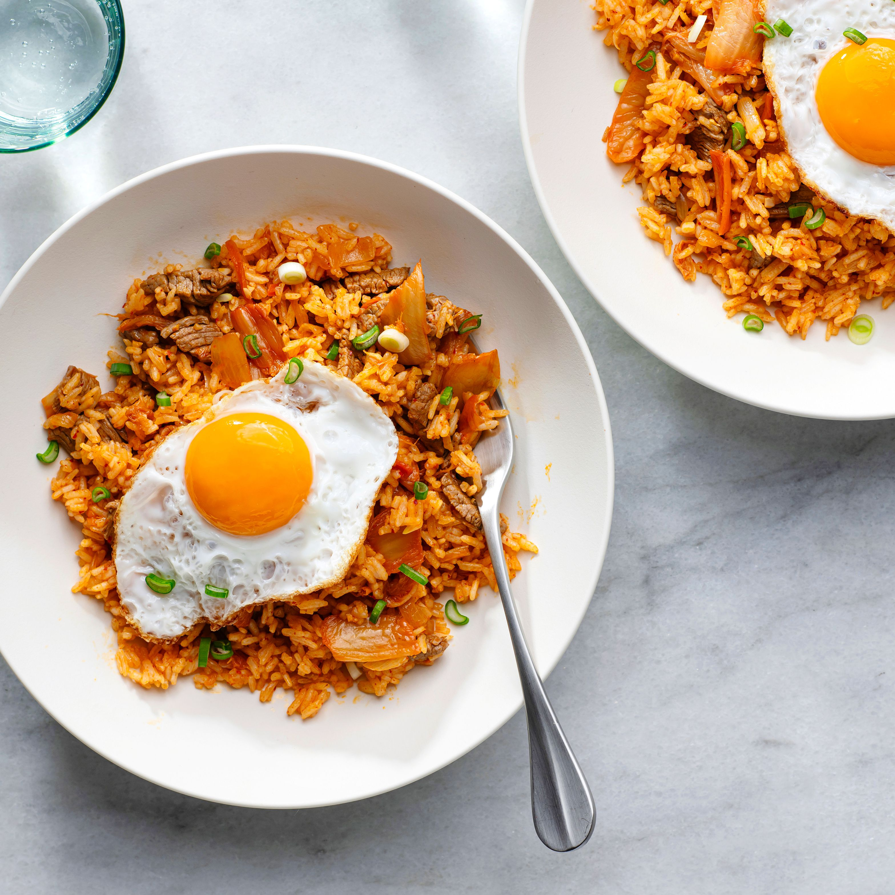

Kimchi fried rice

Description
Delicious, spicy dish in korean style, very fast to make, and healthy to eat, you only need few ingrediendts to cook it, here is list of them.
Ingredients
- 2 Onions
- 1 Red pepper
- 100g of sugar peas
- Half of ginger root
- 4 Pieces of garlic
- 150g of rice
- 300ml Jar of spicy kimchi
- Hand of peanuts
- Pack of bean sprouts
- Green onion
- Soy souce
- Pack of tofu
- 2 eggs
- Optional: Sesame oil
Steps
- Start by washing 150g of rice, and then cook it in 2 portions of water to 1 portion of rice ratio
- Add prefered amount of oil into a pan
- Add chopped garlic and ginger
- After that add chopped papper, onions, and sugar peas
- Later add rice with crushed peanuts
- Add 4 spoons of soy souce
- Then add full jar of kimchi
- Add chopped tofu
- Fry 2 eggs
- Optionally add seasamy oil in the end
- Serve with chopped green onion on top plus 2 eggs
- You got yourself a delicious dish